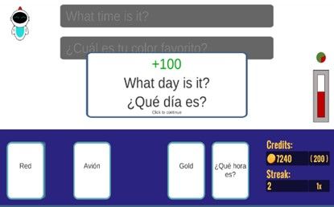
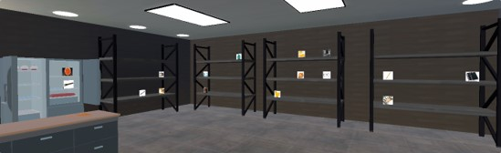
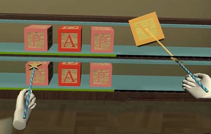
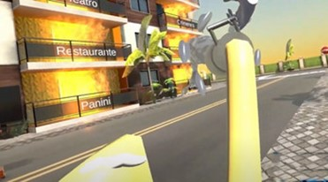
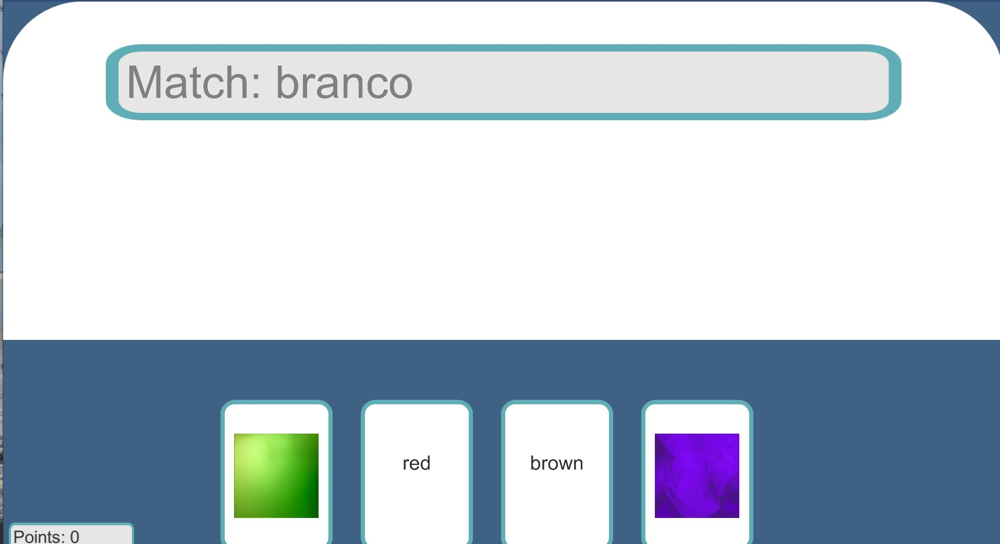
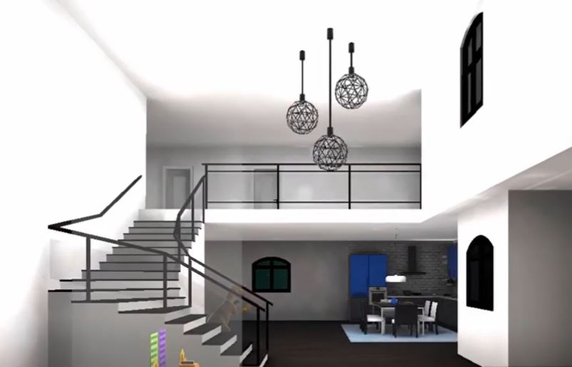

All of the ELLE games are connected to a shared, user-friendly website and database. Instructors design custom practice modules — anything from a chapter's vocabulary list to common travel phrases or frequently confused words — and terms, images, and audio are stored centrally and pulled into whichever game a student selects. Students play under a randomized, FERPA-compliant username, and every session's data (performance, time played, frequently missed terms) flows back to instructors and, with IRB approval, to researchers studying second language acquisition through games.
Play the games at tiny.cc/ellegames.
AnimELLE Crossing (PC)

Like the Nintendo game it nods to, AnimELLE Crossing lets players explore a friendly cartoon world and complete tasks for villagers across four landscapes: forest, village, desert, and beach. Points earned can be spent on avatars, outfits, accessories, and home upgrades. Each task pulls vocabulary from the shared term database, mixing typical matching and multiple-choice formats with a beach scavenger hunt and a spelling game hosted by a wise-cracking elk.
VirtuELLE Mentor Card Game (PC)

Players match terms, phrases, or short sentences across format combinations — L2 text, L2 audio, English text, and images — earning credits for correct matches and streaks that unlock new backgrounds and card colors. The game has been used across Portuguese and linguistics courses at UCF to teach vocabulary and the International Phonetic Alphabet. A mentor avatar can prompt students with Likert-scale or open-ended questions about their confidence and understanding, with responses stored for instructors and researchers.
hELLE's Kitchen (VR)

Players enter a virtual kitchen and follow a "recipe" — sometimes literal (spaghetti), sometimes a themed vocabulary set (school supplies, golf). They locate ingredients around the kitchen and place them in a pot on the stove; incorrect items bounce back out with a thump. Once the correct set is assembled, the finished dish appears and gets served to the chefs at the window.
Spin 'N' SpELLE (VR)

Players hold magic wands in both hands — built for accessibility and for both left- and right-handed play — to summon, rotate, and place letter blocks on a shelf beside an image of the term they're spelling. Accent marks are added with animal-themed stickers. A completed word and its shelf vanish in a puff of purple smoke. Players can spell endlessly or take a quiz mode that asks for each term once.
Highrise hELLEp (VR)

A category sign hangs beside a burning building; random terms from the module appear on balconies. Players aim a water hose at terms matching the displayed category to put out the fire — water has no effect on a mismatched term. If a module's terms aren't labeled by category, the game falls back to translation matching against the English text on the sign.
Milleni-ELLE (VR)

A Spanish-language game built around context and immersion. Players arrive at an airport tutorial scene, then board a virtual bus that takes them to a house to pack for a trip or to a grocery store to practice food vocabulary.
Iterations & Student Teams
ELLE has been rebuilt and extended by many UCF undergraduate teams over the years:
ELLE oh ELLE (mobile multiplayer)
- Brock Checchia, BS Computer Science 2021, Game Developer
- Francisco Franco, BS Computer Science 2021, Game Developer
- Javier Gonzalez, BS Computer Science 2021, Game Developer
- Joshua Pace, BS Computer Science 2021, Game Developer
ELLE-ments of Learning (VR)
- Kaarthik A. Alagappan, BS Computer Science 2020, Backend Developer & Project Manager
- Jonathan Jules, BS Computer Science 2020, VR Developer
- Tiffany Lin, BS Computer Science 2020, Website Developer
- Catalina Morales, BS Computer Science 2020, VR Developer
- Samuel Tungol, BS Computer Science 2020, Backend Developer
- Michael R. Justice, BS Digital Media 2021, Associate Director of Game Design & Publication
ELLE Card Game (PC & Mac)
- Noah Corlew, BS Computer Science 2020, Unity Developer
- Kalvin Miller, BS Computer Science 2020, Website Developer
- Michael Santiago, BS Computer Science 2020, Backend Developer
- Michael R. Justice, BS Digital Media 2021, Associate Director of Game Design & Publication
ELLEBetterRacer (mobile, Android & iOS)
- Jinyu Pei, BS Computer Science 2020, Game Developer
- Zach Schickler, BS Computer Science 2020, Game Developer
- Reinaldo Villasmil, BS Computer Science 2020, Backend/Game Developer
- Michael R. Justice, BS Digital Media 2021, Associate Director of Game Design & Publication
ELLE Speak Your Mind
- Jonah Dearth – Lead Game Designer
- Timothy Sandburg – Level Designer
- Dexavier Chang – 3D Modeler, Designer
- Allyson Foley – 3D Artist
- Isaac Dunaevschi – Lead Programmer
- Sunny Mallard – 3D Modeler
ELLE Ultimate
- Kalonte Jackson-Tate – Full Stack Developer
- Eugene Lucino – Website Front End Developer
- Christopher Rodbourne – Mobile / API Developer
- Josh Sewnath – Project ELLE Game
- Patrick Thompson – Project Manager
ELLE Mobile & AR
- Christian Acosta – Database Developer
- Kyle Hendricks – Android Developer
- James Jachcinski – iOS Developer
- Mustapha Moore – Website Developer
- Dominic Rama – Android Developer
ELLE 2.0 — Otronicon 2019 & HCII 2019
- Mark Behler
- Phillio Da Silva
- Ian Holdeman
- Santiago Perez Arrubla
ELLE 1.0
- Georg Anemogiannis, BS Computer Science 2017
- Eric Butt, BS Computer Science 2017
- Tyler Chauhan, BS Computer Science 2017
- Megan Chipman, BS Computer Science 2017
Gallery




Research Support
- UCF Tech Fee Grant: $6,458.75 (2020–2021)
- UCF Quality Enhancement Grant: $3,500 (2018–2020)